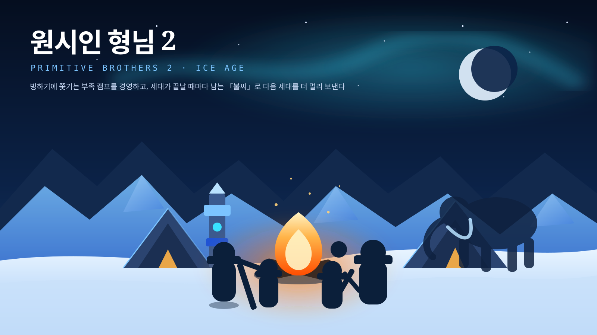
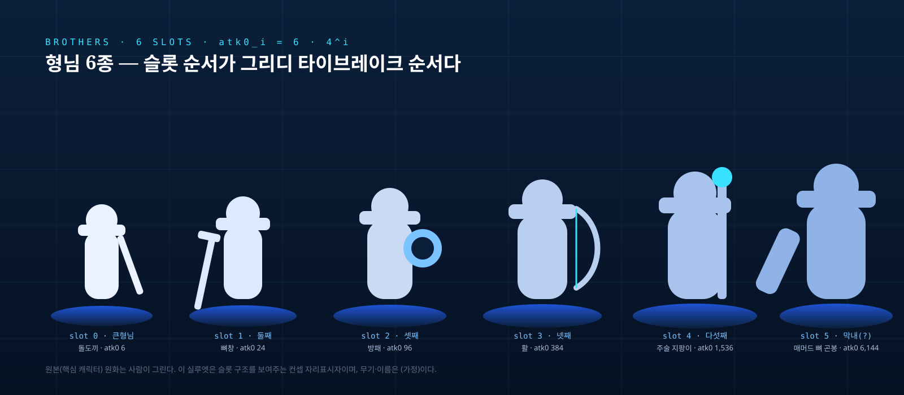
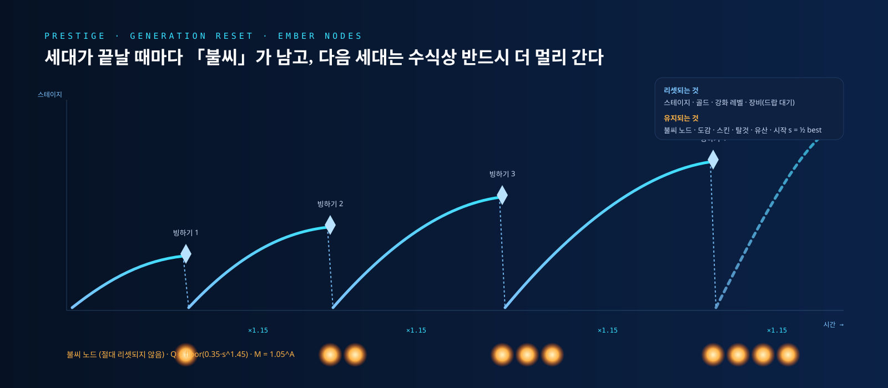
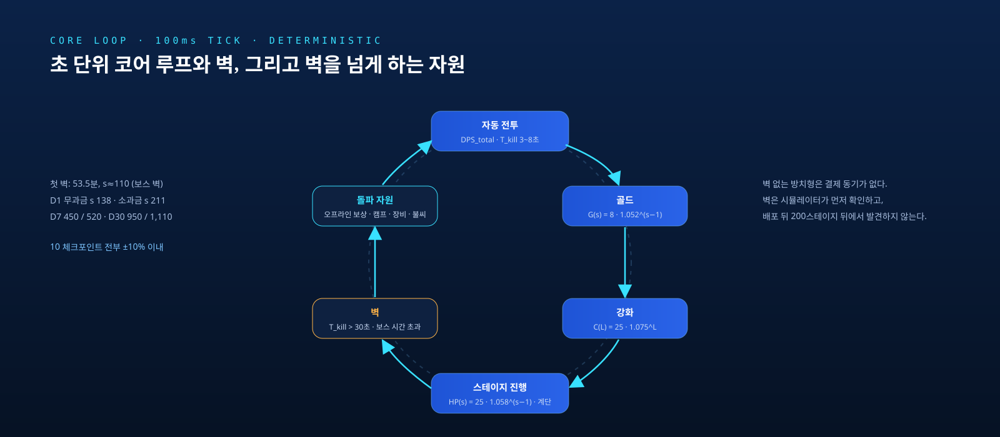

부산 게임사 썬더게임즈를 위한 AX 컨설팅 기획서·세부 자료와, 신작 방치형 RPG 「원시인 형님 2」의 GDD·Codex 빌드 플랜을 7개 전문 에이전트 팀이 생성했습니다. 이 페이지는 그 결과물과 하네스 구조를 정리한 것입니다.
기획서의 핵심 메시지입니다. 도구 이름은 부록에만 있고, 약속은 측정 가능한 것만 합니다.
스킨은 곧 에셋이므로 아트 생산량의 상한이 비확률 매출의 상한입니다. 2025년 8월 시행 개정 게임산업법은 확률 표시 위반에 최대 3배 배상과 입증책임 전환을 붙였습니다. 확률 검증 자동화는 방어 증거를 쌓는 장치입니다.
배포 1회에는 콘텐츠 양과 무관한 고정비가 붙습니다. 지금 구조에서는 쪼갤수록 손해라서 분기 대형 투입은 합리적 대응입니다. AX의 목표는 총량 증가가 아니라 배포 1회당 고정비 인하입니다.
게임 안에 AI를 노출하지 않고 핵심 캐릭터 원화는 사람이 유지합니다. 의존 종료는 날짜가 아니라 조건 3개(운영 담당 지명·소유권 이관·회사가 지표를 스스로 측정)로 정의합니다.
기준선을 재기 전에는 목표 수치를 쓰지 않습니다. 방향만 씁니다.
기획 확정 → 게임 임포트 완료까지 달력 일수. 새 그림과 변형을 분리 측정.
(a) 메이저 간 일수 (b) 월간 배포 횟수. 총량은 보조 지표로 감시.
배포 후 2주 내 핫픽스 대상 건수. 밸런스 기인분과 결제·서버 기인분 분리.
접수 → 첫 유효 답변까지 중앙값·90분위. 템플릿 비율이 함께 내려가야 의미.
제출용 3종(경영진 요약·기획서·첫 미팅 키트)과 컨설턴트 내부 문서 4종. 사실 / (추정) / 미확인 표시를 그대로 유지했습니다.
제출 전 확인: 지원사업 금액 구간(3~10인 최대 1,000만 원)은 원문 미확인이라 확인되지 않으면 삭제합니다. 제안 조직명 "AX 컨설팅 팀"과 담당자 정보는 치환이 필요합니다.
장르는 방치형 RPG를 유지하되 대형 IP 방치형과 정면 경쟁을 피하는 세 축으로 차별화했습니다. Codex가 웹 프로토타입을 자율 구현할 수 있는 스펙까지 내려갔습니다.

8년째 형님들을 키워온 방치형 유저가, 빙하기에 쫓기는 원시 부족의 캠프를 경영하며 형님들을 강화해 사냥터를 밀어 올리고, 세대가 끝날 때마다 남는 「불씨」와 부족 유산이 다음 세대를 반드시 더 멀리 보내기 때문에 계속한다.
대형사 키우기와 다른 동사. "키우는 사람"에서 "부족을 경영하는 사람"으로.
프레스티지를 서사로. 불씨 노드는 절대 리셋되지 않는 단조 증가 자산.
슬롯머신 폐기, 합성은 결정적. 확률은 정수 ppm으로 관리해 표기=구현을 증명.
| bal_v1 파라미터 | 값 |
|---|---|
| 스테이지 HP | HP0=25 · g_hp=1.058 · a_step=0.25 · m_boss=7 |
| 경제 | G0=8 · g_gold=1.052 · C0=25 · g_cost=1.075 |
| 전투력 | ATK0=6 · b=0.12 · g_atk=1.75/25Lv · 형님 6종 |
| 오프라인 | T_cap=8h(패스 12h) · r_off=0.60 · 광고 ×2 |
| 프레스티지 | Q=floor(0.35·s^1.45) · 노드 cost=5+0.7A · M=1.05^A |
| 첫 벽 | 53.5분, s≈110 (보스 벽) · 목표 대비 −2.7% |
| D30 도달 | 무과금 950 / 소과금 1,110 (격차 1.17배) |
아키텍처: TypeScript 모노레포. packages/core(무의존 결정적 룰) → packages/sim(헤드리스 CLI, exit code 2 = 임계 위반) → apps/web(PixiJS). 난수는 xoshiro128** 시드 하나, 수치는 data/balance.json 하나. Unity/C# 포팅은 2차 트랙.

atk0_i = 6·4^i

기획서를 쓰기 전에, 같은 컨셉의 방치형 게임을 에이전틱 코딩으로 실제로 만들어 봤습니다. 문서가 아니라 돌아가는 게임이 컨설팅의 첫 증거입니다.
불씨(Ember)를 지키는 부족(Clan). 원시인 형님 2와 같은 세계관의 방치형 게임을 에이전틱 코딩으로 브라우저 데모까지 만들어 봤습니다. 기획서의 "시뮬레이터-퍼스트"와 "데이터 주도" 원칙이 문서 밖에서도 돌아가는지 확인하는 용도입니다.
https://ember-clan.robin-hwang.chatgpt.site/GPT-6 Astral 같은 최신 모델과 Codex·Claude Code 같은 에이전틱 코딩 도구 덕분에, 기획 문서를 실행 가능한 스펙으로 쓰면 코딩 에이전트가 프로토타입을 스스로 만들고 테스트까지 돌립니다. 9명 규모 스튜디오에게 이것은 "신작을 검증할 여력"이 처음으로 생긴다는 뜻입니다.
데모를 만들며 확인한 세 가지가 빌드 플랜의 원칙이 됐습니다: 난수는 시드 하나에서, 수치는 코드가 아니라 테이블에, 렌더러 없이 콘솔에서 수천 판을 돌릴 수 있어야 한다.
팬아웃(시장·진단·GDD 병렬) → 수렴(전략·빌드 플랜) → 생성-검증(기획서 → 검수) → 조립. 팀원 간 이의와 질의가 실제로 결과를 바꿨습니다.
"CS가 병목 2위이고 난이도 최저인데 아트 단독 1순위는 이상하다" → 1순위 3개 동순위 + 착수 시점 분리로 변경.
대수 표현(f64+사전계산 테이블), 그리디 타이브레이크, 장비 회복 모드, 60/90일 프로파일.
확률 검증표 전설 행 자릿수 오류(그대로면 0.5% 표기가 항상 판정 탈락), 시행수 산식값 10배 오기. 단일 문서 검토로는 못 잡는 경계면 버그.
ax-market-analyst지방(부산) 게임사 AX 컨설팅을 위한 시장·지역·정책 분석 전문가. 방치형 RPG 장르 동향, 모바일 게임 시장, 게임산업 AI 도입 현황과 반응, 부산시·BIPA·콘진원 지원사업을 조사해 '귀사…ax-studio-diagnostician게임 스튜디오의 개발·운영 사이클을 해부해 AX 병목을 진단하는 전문가. 대상사 프로파일 확정, 추정 기술 스택 검증 계획, 업데이트 1사이클 분해, 병목 점수화, 첫 미팅 진단 워크숍(세션 B) …ax-strategy-architect게임사 AX(AI Transformation) 전략 설계자. 시장 브리핑과 스튜디오 진단을 받아 3년 시나리오(운영 심화/글로벌/신작 병렬), 우선순위 매트릭스, 영역별 AX 방안, 에이전트 하네스…game-design-director방치형(키우기) RPG 게임 디자인 디렉터. 신작(예: 원시인 형님 2)의 컨셉, 코어 루프, 성장·프레스티지 시스템, 콘텐츠 시스템, 경제·밸런스 수식, 수익모델(확률형 규제 준수), 라이브 운영…codex-build-plannerGDD를 OpenAI Codex(에이전틱 코딩 도구)가 자율적으로 구현할 수 있는 빌드 스펙으로 변환하는 테크니컬 디렉터. 아키텍처(결정적 코어·헤드리스 시뮬레이터·렌더러 분리), 데이터 테이블 스…ax-proposal-writer고객 제출용 AX 컨설팅 기획서(제안서) 작성자. 시장 브리핑·진단·전략 청사진·GDD를 받아 경영진이 30분 안에 읽고 결정할 수 있는 기획서와 요약본을 작성한다. 도구 이름 우선 금지, 측정 가…ax-deliverable-reviewerAX 컨설팅 산출물(기획서·진단·전략·GDD·빌드 플랜)의 품질 검수자. 문서 간 정합성, 사실/추정 분리, KPI 측정 가능성, 도구 이름 우선 금지, 거버넌스 누락, GDD↔빌드 스펙 대응, 태…ax-consulting-orchestrator오케스트레이터ax-deliverable-reviewax-proposal-writerax-strategy-blueprintcodex-build-specidle-rpg-gddregional-game-market-briefstudio-ax-diagnosis코딩 에이전트는 모호함에 약하고 테스트로 완료를 증명할 수 있는 작업에 강합니다. 그래서 모든 태스크는 실행 명령 → 기대 결과 수용 기준을 갖습니다.
문서가 코드보다 우선. 문서와 코드가 다르면 문서를 고치지 말고 이슈로 남긴 뒤 문서를 따릅니다.
빌드 플랜 7.3의 프롬프트 예시 2개(P0.1, P2.x)를 템플릿으로. 태스크 1개 = Codex 1세션.
npm test · npm run sim:regress(목표 벽 표 ±10%) · npm run e2e. 밸런스 파라미터는 코딩 에이전트가 바꾸지 않습니다.
P2 종료 시 시뮬레이터 리포트로 기획 담당이 목표표를 재검산. 가정은 docs/ASSUMPTIONS.md에 누적.